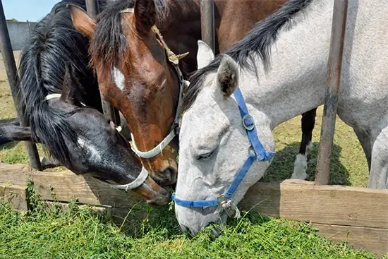
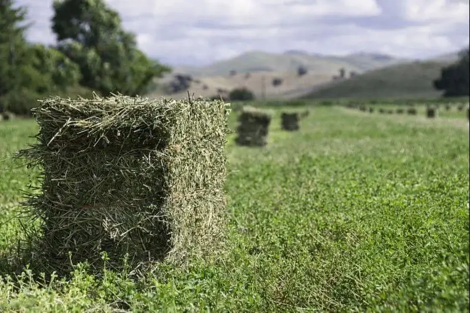

Alfalfa Hay Supplier in Rawalpindi, Islamabad & Sargodha
ہم پاکستان میں اعلیٰ معیار کی خشک لوسرن گھاس مویشیوں، خرگوش، بکری اور گھوڑوں کے لیے فراہم کرتے ہیں۔
ہماری 100فیصد نامیاتی درآمد شدہ لوسرن گھاس سے دودھ کی پیداوار، توانائی اور مجموعی صحت میں اضافہ کریں۔ پاکستان بھر میں گھوڑوں، بکریوں اور ڈیری جانوروں کے لیے بہترین۔

About Khanewal Dry Fodders
Khanewal Dry Fodders is a trusted Alfalfa Hay Supplier in Pakistan, providing premium quality dry lucerne hay to livestock owners and dairy farms. We actively serve Rawalpindi, Islamabad and Sargodha through our dedicated supply points, ensuring timely availability of fresh and high-quality fodder.
Our alfalfa hay (lucerne chara) is protein-rich, carefully dried and processed to maintain maximum nutritional value. Ye lusern ghaas cattle, goats, sheep aur horses ke liye ideal hai aur milk production, animal health aur growth ko improve karti hai. We supply both chopped and bale form as per requirement.
With years of experience in animal feed supply, we focus on consistency, quality and customer satisfaction. Hum direct phone call aur WhatsApp ke zariye orders accept karte hain aur competitive alfalfa hay price in Pakistan offer karte hain. For reliable lucerne hay supply, Khanewal Dry Fodders is your trusted partner.
- Over 10 years of industry experience
- Certified organic and chemical-free products
- Direct import from premium sources
- Serving 500+ satisfied customers nationwide
- Expert nutritional consultation available
- Fast delivery in major cities
WHY CHOOSE US
Premium Benefits for Your Animals
Experience the difference with our high-quality organic animal feed
100% Organic Quality
Certified organic lucerne hay exported from premium sources, completely free from pesticides and harmful chemicals.
High Protein Content
Rich in essential proteins, vitamins, and minerals that promote healthy growth and optimal digestion.
Energy Boost
Increases stamina and vitality in animals, improving performance in racing and working animals.
Better Milk Production
Significantly improves milk production in dairy animals while enhancing milk quality and nutrition.
Our Premium Product – Premium Organic Alfalfa (Lucerne) Hay

Our 100% certified organic lucerne hay (خشک لوسرن) is export from premium sources and specially formulated to promote optimal animal health and performance. Completely free from pesticides, chemicals, and GMOs, this premium feed provides superior nutrition for horses, goats, dairy cattle, and all types of livestock.
This high-protein lucerne hay boosts milk production by 20-30%, improves energy & stamina, enhances coat quality, and promotes healthy digestion and nutrient absorption. Available in Rawalpindi, Islamabad, and Sargodha, order now via phone or WhatsApp for fresh delivery.
Increases Milk Production
Boosts milk yield by 20-30% in dairy animals
Energy & Stamina
Improves energy levels and performance in working and racing animals
Digestive Health
Promotes optimal digestion and nutrient absorption for healthy growth
Ideal for Livestock
Perfect for horses, goats, cattle, and all types of livestock
Serving Across Pakistan
Convenient locations for easy access
Islamabad
Opposite Street 20, Service Road, Sector F-11/2, Islamabad.
Coordinates: 33°40'52.5"N 72°58'33.2"E
Fresh dried Alfalfa lucerne hay available in Islamabad for livestock and dairy farms.
Rawalpindi
Fawara Chowk, Sodhran Road, Ghouri Town, Rawalpindi.
Coordinates: 33°37'33.8"N 73°08'59.0"E
Alfalfa hay and lucerne fodder supplier in Rawalpindi with direct phone and WhatsApp order facility.
Sargodha
Opposite Aziz Bhatti Town, Khushab Road, Sargodha.
Coordinates: 32°06'23.8"N 72°39'06.7"E
Quality alfalfa chara supplier in Sargodha for cattle and dairy use.
Ready to Boost Your Animal's Health?
Order Alfalfa Hay (Lucerne) in Rawalpindi, Islamabad & Sargodha Call Now or WhatsApp for Latest Price
- Fast delivery in major cities
- Bulk order discounts available
- Flexible payment options
- Expert consultation included